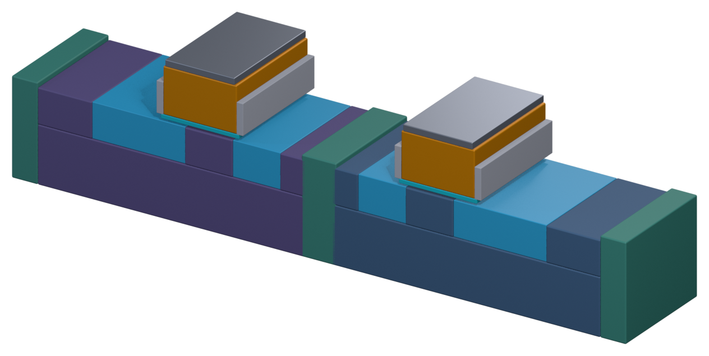

走一遍完整的 CMOS 流程
前面十章的工艺模块，到这里拼成一条完整的线。整条流程看着吓人，其实大部分是同一个循环重复几十次——每重复一次，就用掉一层掩模版。
01三段：做器件、接出来、盖导线
整条流程按目的分成三段。注意这里的「前段/后段」发生在晶圆厂内部，和封装测试的「后段」不是一回事。
三段的分界在不同工厂略有不同，MOL 有时会被并入 FEOL 或 BEOL。
02一个循环，重复几十次
每做一次光刻，就用掉一层掩模版。简单 CMOS 约二十层，先进工艺加上多重曝光可以到数十层。
03FEOL 七步：晶体管是怎么长出来的
点步骤，看剖面一层层变化。每一步下面标了它动用了哪些工艺模块。
隔离1 / 7
挖浅沟槽填氧化硅，再用 CMP 磨平。
STI 通常是流程里最早做的结构之一。它不导电，但形状会影响晶体管的漏电与特性。
04现代栅极：先做假的，再换成真的
先进工艺的栅极是「高介电常数绝缘层 + 金属栅极」（HKMG）。金属受不了源漏退火的高温，所以先用多晶硅做个假栅极占位，等高温步骤全做完，再把它挖掉换成金属。
这种「牺牲层」思维在先进工艺里到处都是：先做容易加工的占位材料，最后再换成真正想要的材料。第 12 章的 GAA 也是先长硅锗、再挖掉。
＋掩模版层数：流程的长度单位
一个简单的 CMOS 工艺大约要二十层掩模版；先进工艺加上多重曝光，可以到数十层以上。每多一层，就多一轮「沉积、光刻、刻蚀、清洗、测量」，成本与周期一起涨。
业界的效率指标：把生产周期除以掩模版层数，得到「平均每层花几天」，常见水准约每层一到两天。只看总天数会误判——层数多的产品本来就更久。
043D 剖面：七步做完之后长什么样
把最终的截面「挤出」一点厚度：正面看是层层叠叠的剖面，斜着看能看出每一块都嵌在别的块里面。

3D 才讲得清的一件事：源漏是嵌在阱里的，栅极是压在沟道上的，STI 是插在器件之间的——这三个「在……里/上/间」的关系，平面剖面只能靠画线暗示。
＋原文里的名词与现场经验
以下内容逐条取自原书，保留「定义 / 现场用法 / 常见混淆」与「情境 / 做法 / 为什么」的原始结构。
名词FEOL、MOL、BEOL
- 定义
- FEOL（Front End of Line）负责做出晶体管；MOL（Middle of Line）负责把晶体管接出来；BEOL（Back End of Line）负责做多层金属导线。
- 现场用法
- 「这是 BEOL 的问题，跟 FEOL 无关。」
- 相关名词
- 前段、后段、接触孔、金属层
- 常见混淆
- 三段的分界在不同工厂略有不同，MOL 有时会被并入 FEOL 或 BEOL。另外要注意，这里的「前段、后段」都发生在晶圆厂内，和封装测试的「后段」不同，见第 0 章。
名词STI（Shallow Trench Isolation，浅沟槽隔离）
- 定义
- 在晶体管之间挖出浅沟槽并填入绝缘材料，把器件彼此隔开的结构。
- 现场用法
- 「STI 的深度偏浅」「STI CMP 磨完要确认氮化硅的厚度」。
- 相关名词
- 有源区（Active Area）、CMP、隔离
- 常见混淆
- STI 通常是流程中最早做的结构之一，虽然它不会导电，但它的形状会影响晶体管的特性和漏电。
Know-how用「每层掩模版几天」比较生产效率
- 情境
- 要比较两个掩模版层数不同的产品，哪一个生产得比较有效率。
- 做法
- 把生产周期除以掩模版层数，得到「平均每层掩模版花几天」，业界常用这个指标比较工厂的效率，常见水准大约在每层一到两天之间，数字越小代表效率越好。
- 为什么
- 掩模版层数越多，步骤就越多，总天数自然越长。除以层数之后，才能公平比较。
- 没做会怎样
- 只看总天数，会误以为层数多的产品生产效率比较差。
- 相关章节
- 第 1 章 晶圆厂如何运行
Know-how同一台设备，晶圆会回来很多次
- 情境
- 一片晶圆在整个流程中，要回到光刻区数十次。
- 做法
- 派工时要考虑每批晶圆在流程中的位置，并让最忙碌的设备（通常是光刻）尽量不要闲置。
- 为什么
- 刚投片的晶圆和快完成的晶圆，会抢同一批设备。这种「重复进入」的流程，是晶圆厂调度特别复杂的原因。
- 没做会怎样
- 晶圆在瓶颈设备前大量堆积，整座工厂的生产周期变长。
- 相关章节
- 第 23 章 工厂如何被系统管理
＋延伸阅读
- James D. Plummer、Michael D. Deal、Peter B. Griffin，《Silicon VLSI Technology》，第 2 章（完整的 CMOS 流程介绍）
- Michael Quirk、Julian Serda，《Semiconductor Manufacturing Technology》，工艺集成相关章节
本章重点
- 整条流程大部分是同一个循环：铺材料 → 光刻 → 刻蚀/注入 → 去胶清洗 → 测量。
- 三大段：FEOL 做器件、MOL 接出来、BEOL 盖导线。
- FEOL 七步：隔离、井、栅极、浅掺、Spacer、源漏、金属硅化物。
- 每多一层掩模版，就多一轮循环，成本与周期都上升。
- 先进工艺常用「假栅极」占位，高温步骤结束后再换成金属栅极。